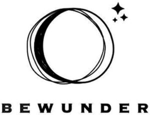

Trade Mark Journal No.2025/029 18 July 2025
WO0000001862427 (20,21)
Office of origin: European Union Intellectual Property Office (EUIPO)
Date of International Registration:28 August 2023
Date of designation in the UK:
28 August 2023

- Class 20
- Containers, and closures and holders therefor, non-metallic; animal housing and beds; statues, figurines, works of art and ornaments and decorations, made of materials such as wood, wax, plaster or plastic, included in the class; ladders and movable steps, non-metallic; furniture and furniture parts; displays, stands and signage, non-metallic; door, gate and window fittings, non-metallic; fasteners, non-metallic; locks and keys, non-metallic; mooring buoys, non-metallic; valves of plastic, other than parts of machines; anchor bolts, not of metal; anchor bolts, not of metal, for use in bridge construction; bag hangers, not of metal; basin plugs of non-metallic materials; bath rails, not made of metal; bathtub grab bars, not of metal; brackets of (non-metallic -) used for fixing plaques; cane connectors of non-metallic materials; cantilevered brackets of non-metallic materials [other than for building]; ceramic knobs; ceramic pulls for cabinets; ceramic pulls for cabinets, drawers and furniture; ceramic pulls for drawers; ceramic pulls for furniture; chain links of non-metallic materials; poles for clothes lines, of wood or plastics; corner cap components, not of metal; corner protectors of plastics; curtain rings; door stops of wood; doorknobs, not of metal; doorplates, not of metal; drawer pulls of earthenware; drawer pulls of glass; drawer pulls of plastic; drawer pulls of porcelain; drawer pulls of wood; drawer pulls, not of metal; fans for personal use, non-electric; ferrules of non-metallic materials for walking sticks; finger-plates, not of metal; floor hinges, not of metal; glass knobs; grommets made of plastics materials; hand fans; hand-held flagpoles, not of metal; hand-held flat fans; hand-operated non-metal garden hose reels; handles made of plastics for doors; hard wood tree stakes; hinges, not of metal; hinges, not of metal having a spring action; hinges, not of metal incorporating a spring; holders for pennants; hooks for towels (non-metallic -); hooks for wall hangings (non-metallic -); hose hangers not of metal; identification bracelets, not of metal; identification tags for animals, not of metal; identification tags of plastic for animals; labels of plastic; mats, removable, for sinks; molds of plaster for casting ceramic materials; mouldings made of plastics for picture frames; mouldings made of substitutes of wood for picture frames; non-metal cabinet stops; non-metal chains; non-metal clamps; non-metal cup hooks; non-metal dock cleats; non-metal door viewers [non-magnified]; non-metal escutcheons; non-metal garden stakes; non-metal hooks; non-metal mirror hangers; non-metal picture hangers; non-metal plant hangers; non-metal saw horse brackets; non-metal shims; non-metal weather vanes; non-metal wheel chocks; non-metallic bathroom hooks; non-metallic grab rails; non-metallic license plate frames; non-metallic numberplate fasteners; non-metallic support grips; non-metallic trays [other than for domestic use or for sorting or counting money]; overhead suspension tracks of non-metallic materials; pipe collars of plastic; plant supports; plastic ear tags for livestock; plastic grave markers; plastic knobs; plastic molds for making soap; plastic molds for making soap for commercial production purposes; plastic molds for use in manufacturing furniture; plastic plant markers; plastic squeeze tubes, empty; plastic suction cups; plastic washers; plugs for baths, not of metal; plugs for showers, not of metal; poles, not of metal; porcelain doorknobs; porcelain pulls; protective shields of plastics materials for trees; non-mechanical reels, not of metal, for flexible hoses; reels of wood for yarn, silk, cord; reels, not of metal, non-mechanical, for flexible hoses; removable covers for sinks; non-metal lock boxes; ring pulls, not of metal; rings for bulls' noses [non-metallic]; safety hooks, not of metal; saw horses; sew-on tags of plastic for clothing; shoe dowels, not of metal; shoe pegs, not of metal; shoulder poles [yokes]; shower curtain hooks; shower curtain rails; shower curtain rings; shower curtain rods; shower grab bars, not of metal; shower rods; sink liners; spacers of plastic for use with sandwich panels; split cane flower sticks; spools (non-metallic -) [other than parts of machines or apparatus]; spring assemblies (non-metallic -) for incorporation into cushions; spring assemblies (non-metallic -) for incorporation into mattresses; spring washers of plastic; springs made principally of plastic; stacking bolts, not of metal; stair rods; stair rods of plastic; stakes, not of metal, for plants or trees; staves of wood; strain relief clips (non-metallic -); strap-hinges, not of metal; suction pads [fixings]; suspension rods (non-metallic -) for hanging up articles; tap venting plugs of plastic; tap venting plugs of wood; tent pegs, not of metal; tile spacers; tissue dispensers, fixed, not of metal; trapeze hooks (non-metallic -); trapeze handles, not of metal, for sail boats; trays, not of metal; tree protectors [tubes] not of metal; tree protectors, not of metal; tree supports (non-metallic -); tube plugs (non-metallic -); turnbuckles (non-metallic -); wall hooks of non-metallic materials; waste dumpsters, not of metal, other than for medical use; winding spools, not of metal, non-mechanical, for flexible hoses; wood door handles; wood doorknobs; wood knobs; wooden plant markers; ambroid bars; animal bone [unworked or partly worked material]; animal claws; animal hooves; animal horns; animal teeth; antlers; artificial horns; bamboo; bamboo poles; bamboo, unworked or semi-worked; coral; coral [unworked or partly worked]; cork bands; corozo; horn, unworked or semi-worked; imitation tortoiseshell; ivory; ivory, unworked or semi-worked; meerschaum; meerschaum [raw or partly worked material]; mother-of-pearl; mother-of-pearl, unworked or semi-worked; onigaya hay [raw or partly worked material]; oyster shells; plaited straw, except matting; rattan; rattan [unworked or partly worked material]; raw mother of pearl; reeds [plaiting materials]; unworked or semi-worked reed; sea whelk shells; shells; shells [unworked or partly worked material]; stag antlers; straw edgings; straw plaits; tortoiseshell; tortoiseshells [unworked or partly worked material]; tusks [raw or partly worked material]; whalebone, unworked or semi-worked; whalebones; wicker; wood ribbon; yellow amber; pot plant support sticks; boxes for dispensing paper towels; dispensers for facial tissues; hand towel dispensers, other than fixed; paper towel dispensers; toilet paper dispensers; racks for body cleansers; racks for cosmetics; shampoo racks; shower gel racks.
- Class 21
- Cleaning articles for clothing and footwear; stretchers for clothing and footwear; cosmetic utensils, cleaning articles, cleaning utensils for toilets and bathrooms; household utensils for cleaning, brushes and brush-making materials; statues, figurines, plaques and works of art, made of materials such as porcelain, terra-cotta or glass, included in the class; tableware, cookware and containers; unworked or semi-worked glass, except building glass; bouquet holders; bowls for floral decorations; bowls for plants; clay floor vases; compost containers for household use; containers for flowers; floor vases; flower baskets; flower bowls; flower bowls of precious metal; flower pot holders; flower pots; flower syringes; flower vases; flower vases of precious metal; flower-pot covers, not of paper; garden syringes; gardening gloves; glass floor vases; glass vases; greenhouse syringes; holders for flowers; holders for flowers and plants [flower arranging]; indoor terrariums [plant cultivation]; indoor terrariums [vivariums]; jardinieres of earthenware; jardinieres of glass; lawn brushes; lawn sprinklers; nozzles for hosepipes; nozzles for watering cans; nozzles for watering hose; paper flower pots; plant baskets; plant syringes; planters of clay; planters of earthenware; planters of glass; planters of plastic; plastic lids for plant pots; plastic spray nozzles; porcelain flower pots; raised garden planters; repotting containers for plants; ritual flower vases; saucers for flower pots; seed tray inserts; seed trays; spray nozzles for garden hoses; window-boxes; watering devices; watering cans; water syringes for spraying plants; vases not of precious metal; vases; syringes for watering flowers and plants; stone floor vases; sprinklers; sprayers attached to garden hoses; sprayer wands for garden hoses; baby bath tubs; baby baths, portable; basins [receptacles]; bathroom basins [receptacles]; bathroom glass holder; bowls [basins]; boxes for holding artificial teeth; ceramic tissue box covers; cotton ball dispensers; cotton ball jars; dispensers for cosmetics; dispensers for liquid soap; dispensers for liquid soap [for household purposes]; dispensers for liquids for use with bottles; dispensers for the storage of toilet paper [other than fixed]; earthenware basins; foldable bath tubs for babies; hand soap dispensers; hand soap holders; hand soap racks; holders for cosmetics; lotion containers, empty, for household use; makeup sponge holders; plastic bath racks [caddies]; plastic bathtubs for children; rails for towels, not of precious metal; rings for towels [bathroom fittings]; rings for towels, not of precious metal; rinsing tubs; scent sprays [atomizers]; shampoo dispensers; shampoo holders; shaving brush stands; shaving dishes; shower gel dispensers; shower gel holders; skin care cream dispensers; soap boxes; soap brackets; soap containers; soap holders; soap racks; stands for portable baby baths; tissue box covers; toilet paper holders; toilet paper racks; toilet roll stands; towel baskets; towel racks; towel rails and rings; towel rings; towel rings, not of precious metal; wall soap dishes; wash basins [bowls, not parts of sanitary installations]; washtubs; water closet brush holders; aquaria and vivaria; devices for pest and vermin control; animal activated animal feeders; animal activated livestock feeders; animal activated livestock waterers; animal bristles [brushware]; animal grooming gloves; animal-activated pet feeders; automatic litter boxes for pets; bathing cages for cats; bird baths; bird baths not being structures; bird cages for domestic birds; bird feeders; bird feeders for feeding birds in the wild; bird feeders for feeding caged birds; bird feeders in the nature of containers; bird repellent devices, not of metal; birdcages; brushes for grooming horses; brushes for pets; cages for collecting insects; cages for household pets; cages of metal for domestic use; cat litter pans; combs for animals; combs for use on domestic animals; containers for bird food; currycombs; de-shedding combs for pets; deshedding brushes for pets; dog food scoops; drinking troughs; drinking troughs for poultry; electronic pet feeders; feeding troughs; feeding troughs for livestock; feeding troughs of metal for cattle; filters for use in cat litter pans; fur brushes for animals; goldfish bowls; horse brushes; horse brushes of wire; horse combs; insect collectors' boxes; liners adapted for pet litter boxes; litter boxes for pets; litter scoops for use with pet animals; litter trays for birds; mane brushes [horse combs]; mangers for animals; mangers for cows; mangers for horses; mangers for sheep; metal pans for cattle; nest eggs, artificial; non-mechanized animal feeders; non-mechanized pet waterers in the nature of portable water and fluid dispensers for pets; perches for bird cages; pet drinking bowls; pet feeding and drinking bowls; pet feeding bowls; pet feeding bowls, automatic; pet grooming glove; pet paw cleaners, non-electric; pig troughs; plastic containers for dispensing drink to pets; plastic containers for dispensing food to pets; plastics trays for use as litter trays for cats; poultry rings; poultry troughs; rings for birds; scoops for the disposal of animals excrement; scoops for the disposal of pet waste; small animal feeders; toothbrushes for animals; ultrasonic bird repellers; watering troughs for cattle; wild animal repellent devices, not of metal; wire cages for household pets; wooden sticks for holding candy or ice cream.
FirstWorks UG (haftungsbeschränkt)